Definición: Desarrollado por la empresa Anthropic, es un asistente de IA enfocado fuertemente en la seguridad, la precisión y la naturalidad al escribir. Es conocido por tener una "personalidad" muy culta y analítica.
Mejor función: Análisis profundo de textos largos y redacción avanzada. Sobresale procesando libros enteros, contratos o bases de código masivas de una sola vez, y escribiendo textos con un tono humano, pulido y natural (muy útil para redacción profesional o literaria).